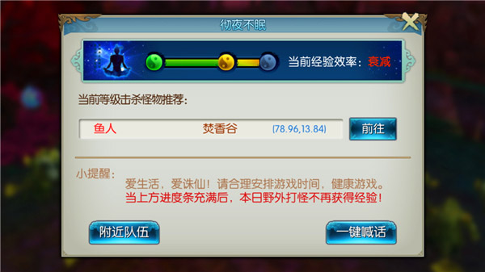
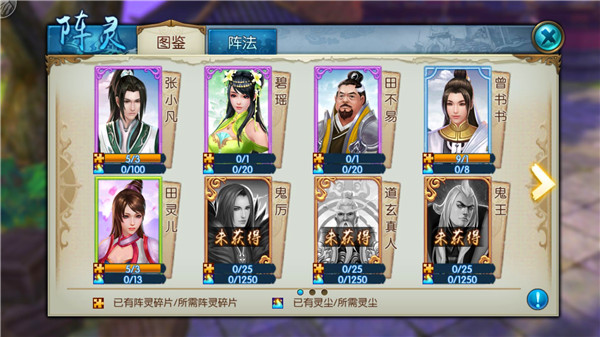

- 云梦
- 焚香
- 青云
- 天音
- 鬼王
- 合欢
-
职业介绍
云梦拥有独特的隐身能力、回血和控制技能，技能多为瞬发，机动性强。
终极绝技
云梦深处
昆山玉碎
春风化雨
职业攻略
07/31[职业攻略] 不玩焚香也要知道的那些事！1900W焚香大佬攻略分享~
06/21 06/16[职业攻略] V9 1831W合欢经验分享！全方位合欢指导！
06/14 05/27 05/24
-
主线任务
主线任务会指引玩家以当前职业身份重温诛仙剧情，在此感受经典情怀。在体验主线剧情任务的过程中，会给予玩家大量经验奖励。

-
副本一条龙
等级大于90级的仙友可在组队平台选择“一条龙”进行组队，加入的队友在进入副本时无需点确认。 一条龙包括：草庙疑云2次、死灵之渊2次、幻月秘境2次、妖兽突袭20次。
-
环线任务
环线任务全天均可参与，每天可获取20次经验奖励。玩家会随机接取到杀怪、寻人、采集物品、收集物品等4种类型任务，完成后将自动接取下一个任务。

-
彻夜不眠
彻夜不眠是通过挂机获得经验的开放式任务。玩家通过组队挂机杀怪获得经验，同时为了提倡健康游戏，野外刷怪获得的经验有一个上限。随着击杀野怪数量的增加，获取经验的效率逐渐衰减，杀怪进度达到最大值后，将不再获得经验增长。

-
炼器玩法
玩家可以通过炼器提高装备的炼器等级，从而大幅度的提升装备的基础属性，在到达特殊的炼器等级时，还可以解锁装备的附加属性以及特殊光效。炼器属于高风险高收益的玩法，成功后道法提升明显，失败后损失同样较大。

-
属性变化
每次炼器成功，可以使装备的基础属性按一定比例提高，并且在固定的炼器等级下，炼器8级和15级分别解锁两条附加属性。

-
外观变化
当武器类装备的炼器等级到达2级、9级和15级时，会触发装备的外观变化，如下图所示：
-
炼器详解
-
玩法入口
玩家可以在主菜单的强化功能图标打开界面，第二个分页即为灌注功能分页。
-
玩法规则
可对武器、衣服、帽子、手套、裤子、鞋子、戒指、项链、玉佩、护符共计10件装备进行灌注； 灌注失败不会降低装备的灌注等级； 每件装备的最高灌注等级都为100级，至多可以灌注3条不同属性。

-
龙鳞铁玉
灌注祝福道具，使当次灌注必定成功。可在每周二的炼血堂逆袭活动中获得。
-
灌注符
灌注符分为以下10种属性，3种品质，分别为普通、极品和神品，品质越高的灌注符，单次灌注成功可以提升的灌注等级越高。
-
玩法介绍
可通过点击角色头像，选择强化-宝石，打开宝石合成、镶嵌界面；武器、护手、鞋子、戒指、项链，可以镶嵌攻击类的宝石；帽子、衣服、裤子、护符、玉佩，可以镶嵌防御类的宝石。
-
宝石升级与摘除
点击宝石界面“升级”按钮，可升级已经镶嵌的宝石；每3颗宝石可以通过八卦炉合成1颗高一级的宝石； 点击宝石界面“摘除”，可将宝石摘除，若宝石有等级刻度，则零碎宝石直接进入宝石包裹。
-
宝石铭刻
消耗道具“铭刻玉”可对宝石槽位进行升级，铭刻玉”可通过兽神之叹活动、限购商店以及日进斗金中获得； 完美属性的激活需铭刻等级与宝石等级一致，但完美属性数值会随等级刻度的提高而提高。
-
宝石包裹
点击强化-宝石界面，进入“宝石包裹”进界面；宝石包裹分为攻击类和防御类，且不同的宝石类型对应不同的宝石包裹；可“放入”或“提取”不同种类的宝石，减轻人物背包负担。
-
法宝收集
法宝是角色的一件装备，具备增加人物道法的基础属性，同时能激活法宝自带技能； 法宝可以收集，每种法宝第一次装备时，都会激活玩家的收集属性，可以永久增加角色道法。
-
法宝传承
当需要更换装备的法宝时，可通过消耗道具“金梵法器”将原法宝的属性转移至新法宝； 传承后，原法宝的聚气、灌魔、血炼属性转移至新法宝，原法宝仍然保留，但其灌魔属性清空、血炼属性重置。
-
法宝血炼、聚气、灌魔
每个法宝有3个血炼属性，可通过点击“洗炼”刷新血炼属性，相同血炼属性的法宝，可点击“血炼”将其属性融合；所有法宝在获得时都是1级，玩家可通过聚气操作吸收其他装备或物华天宝道具，对当前法宝提升经验；可消耗真魂赦令在法宝-灌魔中改变当前装备法宝的灌魔效果。

-
法宝精进
所有已经激活的法宝可消耗道具“日月精华”进行升级操作，升级后属性会有所提升；阴阳相生操作可以随机改变法宝所有五行精魄的阴阳类型；根据法宝的至阴/至阳等级会激活对应的额外附加属性。
-
阵灵玩法
玩家可以通过收集阵灵激活阵法，获得大幅道法提升。阵灵可通过阵灵碎片提升品阶，品阶提升将提升阵灵的加成效果。属性被动加成给角色，与上阵与否无关。
 -
阵灵情缘
当多个有情缘的阵灵同时出现在一个阵法中，可激活情缘属性。情缘属性将对角色进行额外加成。情缘属性不受阵灵本身的品阶影响，只有上阵同一阵法的阵灵，才可激活情缘效果。

-
阵法激活
阵法能够额外提供角色属性，提供大量道法加成。每个阵灵可通过炼灵额外获得1~3条属性及随机1~3条情缘，阵法属性激活与否根据上阵阵灵的最低品阶决定。

-
阵灵攻略
策略战斗 出奇制胜 《诛仙手游》阵灵系统玩法攻略：http://zx.wanmei.com/mobile/mobilenews/newscon/20160902/186357.shtml
四版本阵灵搭配推荐！：http://zx.wanmei.com/mobile/startegy/xq_slg/20161014/187613.shtml
那些雪琪的情缘们，四攻击阵全5星炼灵！：http://zx.wanmei.com/mobile/startegy/xq_slg/20161011/187419.shtml
小白、三妙夫人阵灵搭配 新阵灵数据提前知晓：http://zx.wanmei.com/mobile/startegy/xq_slg/20160923/187071.shtml
-
玩法介绍
星魂系统70级开启墨蓝图，138级开启酱紫图，默认解锁墨蓝图，装备星魂可提升角色属性和道法； 点击头像-人物-星魂，进入到星魂系统界面。
-
星图介绍
星魂图由墨蓝图和绛紫图组成，每张图中的星魂均分布在绿、紫、橙三个区域； 墨蓝图中的孔位，当升级到10级后，即可解锁下一个星魂位。每孔满级20级； 酱紫图需墨蓝图的9个孔位的星魂均达到10级后才会开启，每孔满级17级。
-
星魂升级与拆解
消耗同方位的星尘对星魂进行升级；拆解星魂会获得同方位的星尘，且数量不会有折损。
-
区域属性
每个区域装备不同类型的星魂可以激活的属性奖励皆不相同；绛紫图与墨蓝图区域激活属性类型相同，但数值不同。
-
玩法介绍
人物≥130级，可对装备进行洗炼。只有身上的装备可进行洗炼，洗炼后装备即绑定； 消耗洗练符可对装备在身上的装备进行洗炼，洗炼将激活装备额外的1-5条洗炼属性，根据使用的洗练符不同，每次洗炼可随机出的属性条数最低值和属性的下限有所不同； 同一个装备同一种洗炼效果最多出现3次。
-
洗练道具
装备洗练1次固定消耗1个洗练符，洗练符共分为3个品质，洗练符品质类型如下图； 洗练符获取途径：灵境寻宝获得。
-
装备熔炼
耗熔炼符可对装备进行熔炼操作，将装备现有的任意一条洗炼属性替换为熔炼符上的固有属性条； 在洗炼界面选择熔炼符，点击“洗炼”，选择现有的洗炼属性点击“替换”，即可。
-
洗练效果
洗练可随机获得洗练属性和天命被动技能； 共有6种被动技能：追命、施危、惊鸿、信步、凝神、留影。每种被动技能有2个效果，分别在适用于不同的部位。
-
进入游戏
进入游戏需要选择你要进行修仙的职业，这决定这你之后的游戏方向，不会看属性也没关系，看哪个职业展示技能可以打动你，那就是它了！
-
选择职业
接下来，为自己起一个美出新高度的名字吧，如果没有想法也没关系，点击随机，会出现很多很多酷到没朋友的名字。
-
创建角色
接下来就是如何更美的装扮自己，12种发型、10种脸型、9种服装……任你选！这个选定就是你出生的样子了，当然你也不用特别纠结，这个后期是可以进行改变的！美美哒你就这么“出生”了！
-
时装概述
这里一定要强调一下，时装唯美，分为“时装”“装备”两种，打开“衣橱”——时装界面，可随意搭配更换。时装有时装的华丽，如果想展示个性的装备，只需在时装界面，点击右侧已装备时装下对应部位的“小眼睛”符号即可，同理，发型、脸型、武器均可如此操作决定显示的外观哦。
-
时装染色
想要突出个性，或者喜欢DIY，那么可以打开时装染色界面，对自己喜欢的时装进行染色处理，大千世界唯你不同。
-
时装传记
喜欢唯美古风小说的你会发现，每一件唯美时装均有一段动人的故事，时装界面中，点击进入“时装传记”玩法。收集指定的永久时装+永久头发即可激活对应的“时装传记”，“时装传记”激活后将永久生效，不会随着替换时装穿着而消失。
-
宠物概述
有一种相守相伴的萌宠小伙伴是一件必要的事情，独闯天下，它的陪伴就变得相当重要了。上百种灵宠供你选择，它们有的憨态可掬，有的活泼灵动，不论是九天灵物或是飞禽走兽都将成为长伴你左右的宠物。更有如花魅公主这种轻翼如蝉，美丽可爱的人间精灵也列入宠物大军之中，分布在世界的各个角落，只要合理利用捕兽夹，耐心加细
-
坐骑概述
坐骑、飞剑、法宝是修仙之旅中不可缺少的伴侣，为了满足玩家的不同个性需求，任何法宝、飞剑均可化身坐骑，不仅提升战斗属性，更可任意御空飞行，览尽天下美景不再是梦想。法宝的获得相对简单，只需完成“天帝宝库”任务即可收获法宝，而游戏中充满更多隐藏任务，不经意间完成任务，可收获更多法宝，收获众人艳羡目光哦！此
-
坐骑展示
-
好友概述
初入游戏，对一切都是那么的陌生，不要紧，看到行色匆匆的人了吗？过去点住他，右键点击他的头像，即会看到一个菜单，无论是加好友、邀请组队、聊天，甚至进行一系列互动都是可以的，这样以后修仙之路就有了相伴之人，说不准还可以执手到天涯呢！
-
好友密语
有了好友，接下来就是如何交谈拉近距离，打开好友界面，通过选择通讯录点击想聊天的好友，即可在右边的对话框中尽情畅谈！
-
个人空间
除此之外，还可以在游戏中享受丰富便捷的交互体验。可以上传自己的专属头像和个性签名，寻找与你志同道合的挚交好友，流畅的语音聊天将方便你们畅快沟通
-
游戏地图
打开地图，好多好多美丽的地方都想去“旅行”，那么首要任务你要先升级，有了飞剑，便可御空飞行，览尽天下美景。诸多美景可选择每个地图的“飞天仙子”前往该场景，当你等级越来越高，便可在地图中直接点击前行！如果再来个多人坐骑，邀请你的那个TA，从此仗剑走天涯！只羡鸳鸯不羡仙！